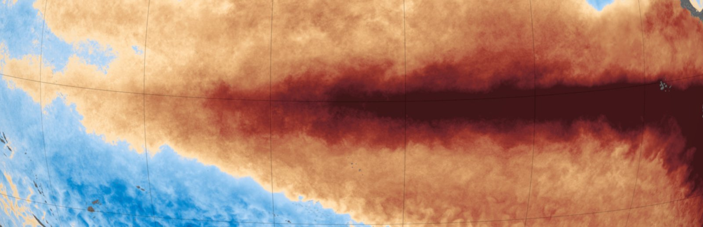
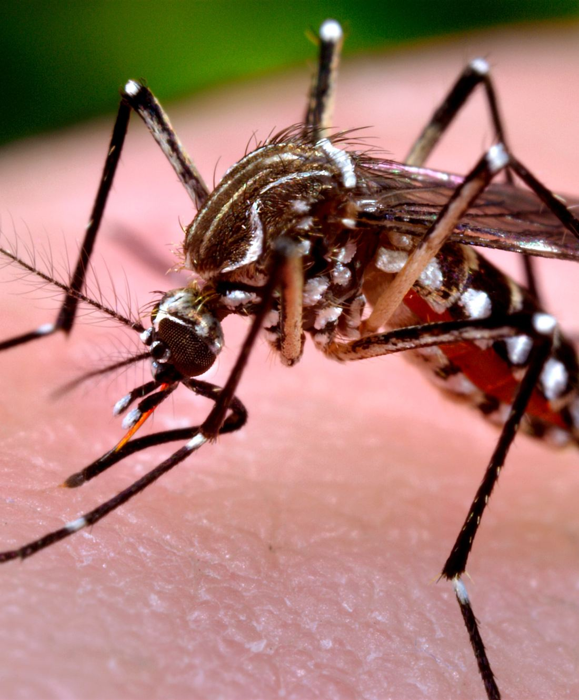
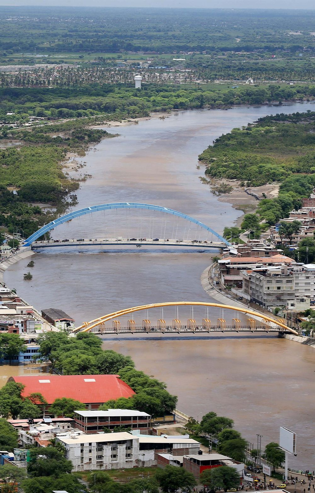

Dengue
Las lluvias dejan agua estancada donde se cría el zancudo Aedes aegypti.
Lluvias y agua estancada

Clair Niño
Una estación vecinal de bajo costo que mide calor, humedad y aire dentro de tu casa y, con IA, te dice tu riesgo de hoy (dengue, golpe de calor, humedad) y qué hacer, citando fuentes oficiales.

Calor más intenso, lluvias fuertes en la costa norte y agua estancada. Los comunicados oficiales existen, pero no llegan a la casa ni dicen qué hacer hoy.
En 2023, con el Niño costero y el ciclón Yaku, el CDC Perú alertó de una epidemia de dengue: 72 163 casos y 79 fallecidos notificados solo hasta la semana epidemiológica 18. Fuente: CDC Perú (MINSA), 13 de mayo de 2023
Las lluvias dejan agua estancada donde se cría el zancudo Aedes aegypti.
Niños y adultos mayores son los más expuestos al calor dentro de la vivienda.
La humedad alta sostenida trae moho y problemas respiratorios.
De una lectura dentro de la casa a un aviso de una línea que cualquier familia entiende.
Temperatura, humedad, CO₂ y partículas dentro de la vivienda, cada pocos minutos.
Un índice de riesgo de dengue, calor y humedad de 0 a 100, explicado en una frase.
Un aviso en español simple con una sola acción concreta para hoy.
Un asistente de emergencia que contesta con las guías oficiales y cita la fuente.
No es un chat suelto: la IA interpreta lo que pasa en tu casa, escribe la alerta y responde con fuentes oficiales.
Reglas con fundamento (rango del zancudo, índice de calor) y un modelo de lenguaje que explica el resultado en una frase.
"Humedad 84 %" se convierte en un aviso claro con una acción concreta, listo para compartir con la comunidad.
Responde solo con guías oficiales de MINSA e INDECI, cita la fuente y, si no lo sabe, lo dice.
Ejemplo · escenario simulado en Piura
ALTO 82/100
Respuesta real · DeepSeek
«El calor y la humedad dentro de su casa favorecen la reproducción del zancudo del dengue. Elimine hoy mismo el agua estancada de baldes, tanques y recipientes. Siga las alertas oficiales de MINSA y SENAMHI.»
Hardware de bajo costo que ya existe, pensado para instalarse en una casa o en el barrio.
Temperatura y humedad para el índice de calor y el riesgo de dengue.
CO₂ para saber cuándo ventilar la vivienda.
Partículas PM2.5 y PM10 en el aire.
Pluviómetro de balancín que mide la lluvia acumulada.
Sensor ultrasónico o de radar para anticipar inundaciones y huaicos.
Procesa las lecturas y las envía por Wi-Fi.
Para exteriores, con batería y panel solar opcional.

Con varias estaciones en el barrio, los municipios podrán priorizar dónde fumigar o enviar ayuda primero.